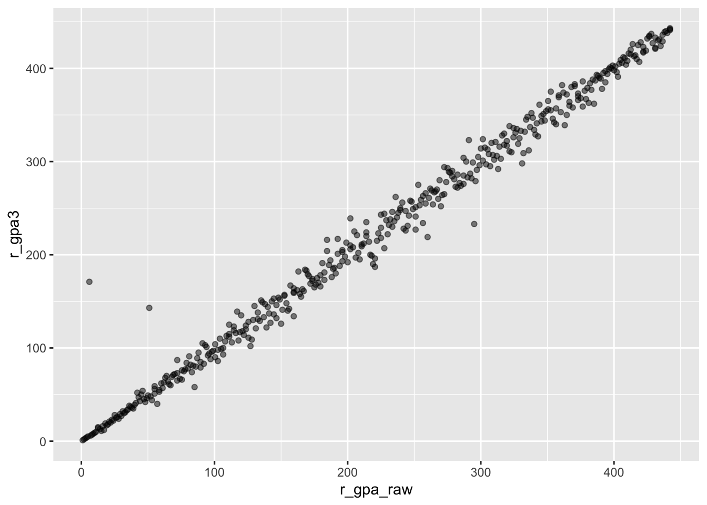

Whole <- LSTbook::Grades |>
left_join(LSTbook::Sessions) |>
left_join(LSTbook::Gradepoint)Ranking by grade
linear algebra
Re-arrange the grades into a matrix
How many students did each instructor teach?
nstudents <- Whole |>
summarize(count = n(), .by = iid) |>
arrange(desc(count))Let’s look only at instructors with more than 10 students.
Keepers <-
nstudents |>
filter(count > 10) |>
left_join(Whole)Joining with `by = join_by(iid)`Method
https://maherou.github.io/Teaching/files/CS317/masseyMethod.pdf
Matrix of students in departments
To <- Keepers |> select(sid, dept, gradepoint)
M <- matrix(0, nrow=40, ncol=443)
depts <- unique(To$dept)
depts_inds <- 1:length(depts)
students <- unique(To$sid)
students_inds <- 1:length(students)
# Loop over the sessions
for (k in 1:length(depts)) {
this_session <- To |> filter(dept == depts[k]) |> select(sid)
inds <- which(students %in% this_session$sid)
M[k, inds] <- 1
}
image(1:ncol(M), 1:nrow(M), 1000*t(M), col = terrain.colors(5), axes = FALSE)
S <- svd(M)
inds1 <- order(c(S$u[,1]))
inds2 <- order(c(S$v[,1]))
VA <- M[ inds1, inds2 ]
# assemble the first few rank-1 matrices
one <- S$u[inds1,1, drop = FALSE] %*% t(S$v[inds2,1, drop = FALSE])
partial <- 0 # initial value
for (k in 1:4) {
partial <- partial + S$d[k] * S$u[inds1,k, drop = FALSE] %*% t(S$v[inds2,k, drop = FALSE])
}
image(1:ncol(partial), 1:nrow(partial), t(partial),
col = scales::grey_pal(start = 0.2, end = 0.8)(15),
axes = FALSE)Matrix of students in sessions
To <- Keepers |> select(sid, sessionID, gradepoint)
M <- matrix(0, nrow=1368, ncol=443)
sessions <- unique(To$sessionID)
sessions_inds <- 1:length(sessions)
students <- unique(To$sid)
students_inds <- 1:length(students)
# Loop over the sessions
for (k in 1:length(sessions)) {
this_session <- To |> filter(sessionID == sessions[k]) |> select(sid)
inds <- which(students %in% this_session$sid)
M[k, inds] <- 1
}
image(1:ncol(M), 1:nrow(M), 1000*t(M), col = terrain.colors(5), axes = FALSE)
S <- svd(M)
inds1 <- order(c(S$u[,1]))
inds2 <- order(c(S$v[,1]))
VA <- M[ inds1, inds2 ]
# assemble the first few rank-1 matrices
one <- S$u[inds1,1, drop = FALSE] %*% t(S$v[inds2,1, drop = FALSE])
image(1:ncol(one), 1:nrow(one), 1000*t(one), col = terrain.colors(5), axes = FALSE)dim((S$u[,1, drop = FALSE]))[1] 1368 1dim(S$u[,1, drop=FALSE])[1] 1368 1foo <- data.frame(index=c(t(VA)),
y=rep(1:443,times=1368),
x=rep(1:1368, each=443) )
ggplot( foo, aes(x=x, y=y, fill=index)) +
geom_tile() +
xlab("Class session") + ylab("Student") Head-to-head competitions
To <- Keepers |> select(sid, sessionID, gradepoint)
From <- To |>
rename(sid2 = sid, gradepoint2 = gradepoint)
All <- To |> left_join(From) |> unique()Joining with `by = join_by(sessionID)`Warning in left_join(To, From): Detected an unexpected many-to-many relationship between `x` and `y`.
ℹ Row 1 of `x` matches multiple rows in `y`.
ℹ Row 1 of `y` matches multiple rows in `x`.
ℹ If a many-to-many relationship is expected, set `relationship =
"many-to-many"` to silence this warning.Session_pos <- All |>
select(sessionID) |>
unique() |>
mutate(Session_pos = row_number())
Student_pos <- All |>
select(sid) |>
unique() |>
mutate(Student_pos = row_number())
All<- All |>
filter(sid < sid2) |>
mutate(pointdiff = gradepoint - gradepoint2) |>
left_join(Session_pos) |>
left_join(Student_pos) |>
left_join(Student_pos |> rename(sid2 = sid, Student2_pos = Student_pos))Joining with `by = join_by(sessionID)`
Joining with `by = join_by(sid)`
Joining with `by = join_by(sid2)`M <- matrix(0, nrow = nrow(All), ncol = nrow(Student_pos))
Pos1 <- All |> select(Student_pos) |>
mutate(pos = row_number() + n()*(Student_pos - 1))
Pos2 <- All |> select(Student2_pos) |>
mutate(pos = row_number() + n()*(Student2_pos - 1))
M[Pos1$pos] <- 1
M[Pos2$pos] <- -1
rankings <- lm(All$pointdiff ~ M - 1)
Result <- tibble::tibble(ranking = coef(rankings), sid = Student_pos$sid) |>
arrange(desc(ranking))Compare ranking to GPA
Sidebyside <- Whole |>
summarize(gpa = mean(gradepoint, na.rm = TRUE), .by = sid) |>
left_join(Result)Joining with `by = join_by(sid)`Sidebyside |> ggformula::gf_point(gpa ~ ranking)Warning: Removed 2 rows containing missing values or values outside the scale range
(`geom_point()`).Now we have the gradepoints in a head to head competition
Pairs <- abs(M)
dim(Pairs)[1] 13348 443S <- svd(Pairs)
inds1 <- order(c(S$u[,1]))
inds2 <- order(c(S$v[,1]))
VA <- Pairs[ inds1, inds2 ]
foo <- data.frame(index=c(t(Pairs)),
y=rep(1:443,times=13348),
x=rep(1:13348, each=443) )
ggplot( foo, aes(x=x, y=y, fill=index)) +
geom_tile() +
xlab("Class session") + ylab("Student") SVD approach, not working
Break into an array, students on vertical axis, instructors on horizontal.
MINI- PROJect on cleaning: Who are the duplicates?
Mat <-
Keepers |>
unique() |> # THERE ARE DUPLICATES
select(sessionID, sid, gradepoint) |>
pivot_wider(names_from = sid,
values_from = gradepoint,
values_fn = ~ mean(.x))
Mat[is.na(Mat)] <- 3.5Make into a matrix
Students <- names(Mat)
Sessions <- Mat$sessionID
Mat2 <- Mat |> select(-sessionID) |>
unlist() |> as.numeric() |>
matrix(nrow = length(Sessions))Do the SVD
res <- svd( Mat2)
a1 <- res$u[,1,drop=FALSE]
b1 <- res$v[,1,drop=FALSE] |> t()
a2 <- res$u[,2,drop=FALSE]
b2 <- res$v[,2,drop=FALSE] |> t()Show the raw data
library(reshape2) # for melt
Attaching package: 'reshape2'The following object is masked from 'package:tidyr':
smithsmelt( Mat2 ) |>
ggplot( aes(x=Var1, y=Var2, fill=value)) +
geom_tile() +
scale_fill_gradient2() +
xlab("") + ylab("Student") Re-arrange according to principal vectors
inds1 <- order(c(res$u[,1]))
inds2 <- order(c(res$v[,1]))
Sorted <- Mat2[ inds1, inds2 ]
Sorted[1:50,1:50] |> melt() |>
ggplot( aes(x=Var1, y=Var2, fill=value)) +
geom_tile() +
scale_fill_gradient2() +
xlab("") + ylab("Student") SAT scores and academic performance
The College Board claims that the predictive power of the SAT on (first-year) college performance corresponds to \(r \approx 0.40\).
To visualize what this means, let’s construct 10,000 pairs of SAT versus UATX performance that have this correlation and look at the rank of each student by both measures.
n = 10000
Simulation <- tibble(
common = 0.4 * rnorm(n),
UATX = common + 0.47 * rnorm(n),
SAT = common + 0.47 * rnorm(n)
)
Simulation |>
model_train(UATX ~ SAT) |>
R2() n k Rsquared F adjR2 p df.num df.denom
1 10000 1 0.1844265 2260.859 0.184345 0 1 9998Simulation |> point_plot(rank(UATX) ~ rank(SAT))Perhaps a better intuition can be had by imagining 200 applicants and looking at the performace of those in the top half of the SAT versus those in the bottom half.
Simulation |>
mutate(sat_position = ifelse(rank(SAT) > n/2, "top", "bottom")) |>
take_sample(n = 200) |>
point_plot(rank(UATX) ~ sat_position, annot = "model",
point_ink = 0.5)